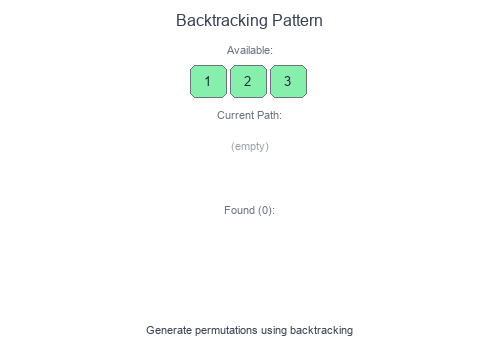

Introduction to Backtracking Pattern
Backtracking is a systematic way to explore all possible solutions by building candidates incrementally and abandoning ("backtracking") paths that cannot lead to valid solutions. Think of it as a depth-first search through a decision tree.
Visual Example
Generating Permutations with Backtracking

At each step, we make a choice, explore further, then undo the choice (backtrack) to try other options. Invalid paths are pruned early.
Core Concept
backtrack(state):
if is_solution(state):
record solution
return
for choice in get_choices(state):
if is_valid(choice):
make_choice(choice)
backtrack(new_state)
undo_choice(choice) # BACKTRACK
When to Use
- Generate all permutations or combinations.
- Solve constraint satisfaction (Sudoku, N-Queens).
- Find all paths in a graph/tree.
- Partition problems (equal subset sums).
- Word search in a grid.
- Any "find all solutions" or "can we reach X?" problem.
Pattern Recipe
- Define the state: What information tracks your progress?
- Define the goal: When is a path complete/valid?
- Define choices: What options exist at each step?
- Prune invalid paths: Skip choices that can't lead to solutions.
- Backtrack: Undo changes after exploring a path.
Complexity
- Time: Often $O(n!)$ or $O(2^n)$ — exponential by nature
- Space: $O(n)$ for recursion depth (plus output storage)
Short Examples — Python
Permutations
def permutations(nums: list[int]) -> list[list[int]]:
result = []
def backtrack(path: list[int], remaining: set[int]):
if not remaining:
result.append(path[:])
return
for num in list(remaining):
path.append(num)
remaining.remove(num)
backtrack(path, remaining)
remaining.add(num) # Backtrack
path.pop() # Backtrack
backtrack([], set(nums))
return result
# [1,2,3] → [[1,2,3], [1,3,2], [2,1,3], [2,3,1], [3,1,2], [3,2,1]]
Combinations
def combinations(n: int, k: int) -> list[list[int]]:
result = []
def backtrack(start: int, path: list[int]):
if len(path) == k:
result.append(path[:])
return
for i in range(start, n + 1):
path.append(i)
backtrack(i + 1, path)
path.pop() # Backtrack
backtrack(1, [])
return result
# n=4, k=2 → [[1,2], [1,3], [1,4], [2,3], [2,4], [3,4]]
Subsets
def subsets(nums: list[int]) -> list[list[int]]:
result = []
def backtrack(start: int, path: list[int]):
result.append(path[:]) # Every path is a valid subset
for i in range(start, len(nums)):
path.append(nums[i])
backtrack(i + 1, path)
path.pop() # Backtrack
backtrack(0, [])
return result
# [1,2,3] → [[], [1], [1,2], [1,2,3], [1,3], [2], [2,3], [3]]
Combination Sum (with reuse)
def combination_sum(candidates: list[int], target: int) -> list[list[int]]:
result = []
def backtrack(start: int, path: list[int], remaining: int):
if remaining == 0:
result.append(path[:])
return
if remaining < 0:
return
for i in range(start, len(candidates)):
path.append(candidates[i])
backtrack(i, path, remaining - candidates[i]) # Can reuse
path.pop()
backtrack(0, [], target)
return result
# [2,3,6,7], target=7 → [[2,2,3], [7]]
N-Queens
def solve_n_queens(n: int) -> list[list[str]]:
result = []
board = [['.'] * n for _ in range(n)]
def is_safe(row: int, col: int) -> bool:
# Check column
for i in range(row):
if board[i][col] == 'Q':
return False
# Check diagonals
for i, j in zip(range(row-1, -1, -1), range(col-1, -1, -1)):
if board[i][j] == 'Q':
return False
for i, j in zip(range(row-1, -1, -1), range(col+1, n)):
if board[i][j] == 'Q':
return False
return True
def backtrack(row: int):
if row == n:
result.append([''.join(r) for r in board])
return
for col in range(n):
if is_safe(row, col):
board[row][col] = 'Q'
backtrack(row + 1)
board[row][col] = '.' # Backtrack
backtrack(0)
return result
Word Search
def word_search(board: list[list[str]], word: str) -> bool:
rows, cols = len(board), len(board[0])
def backtrack(r: int, c: int, idx: int) -> bool:
if idx == len(word):
return True
if (r < 0 or r >= rows or c < 0 or c >= cols or
board[r][c] != word[idx]):
return False
# Mark as visited
temp = board[r][c]
board[r][c] = '#'
# Explore all directions
found = (backtrack(r+1, c, idx+1) or
backtrack(r-1, c, idx+1) or
backtrack(r, c+1, idx+1) or
backtrack(r, c-1, idx+1))
board[r][c] = temp # Backtrack
return found
for r in range(rows):
for c in range(cols):
if backtrack(r, c, 0):
return True
return False
Sudoku Solver
def solve_sudoku(board: list[list[str]]) -> bool:
def is_valid(row: int, col: int, num: str) -> bool:
# Check row and column
for i in range(9):
if board[row][i] == num or board[i][col] == num:
return False
# Check 3x3 box
box_row, box_col = 3 * (row // 3), 3 * (col // 3)
for i in range(box_row, box_row + 3):
for j in range(box_col, box_col + 3):
if board[i][j] == num:
return False
return True
def backtrack() -> bool:
for r in range(9):
for c in range(9):
if board[r][c] == '.':
for num in '123456789':
if is_valid(r, c, num):
board[r][c] = num
if backtrack():
return True
board[r][c] = '.' # Backtrack
return False # No valid number
return True # All cells filled
backtrack()
Backtracking vs Other Approaches
| Approach | Use When |
|---|---|
| Backtracking | Need ALL solutions or checking existence |
| DP | Counting solutions or optimization |
| Greedy | Local optimal leads to global optimal |
| BFS | Shortest path / level-order exploration |
Common Pitfalls
- Forgetting to backtrack (undo changes).
- Not pruning invalid paths early (causes TLE).
- Modifying shared state without proper cleanup.
- Off-by-one errors with indices.